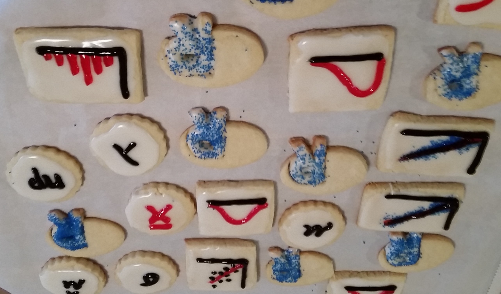

I just wrapped up another round of teaching stats. I co-teach two courses per year as an adjunct instructor: one class that covers intro stats and the other that hits higher level concepts. Both courses move at a high pace; they’re intended to be a survey course for professionals with a STEM background. Some students have a math background, but have never taken a statistics course. Other students have had statistics a long time ago in their undergraduate studies, but want to brush up on the material.
In both classes, by the time we get to the end, the students appreciate a light hearted activity. I found bingo to be the perfect activity to reveiw material and have a little fun. Jenny Bryan and Dean Attali have an R Shiny app for creating such bingo games. Their site has a handful of pre-populated game themes such as “boring meeting” and “bad data”. Or you can choose to create your own by pasting a list of words.
I created my own bingo questions that I ask during the game and answers that are written on the bingo cards. (Tip: Don’t forget to bring the associated list of questions to class like I did!) I’ve pasted the questions and answers below that I used for each class.
Lastly, don’t forget the sugar! M&M’s make great bingo chips. And, cookies decorated with statistics are a crowd-pleaser.

Bingo Questions for Probability & Statistics I
| Questions | Answers |
|---|---|
| 1. The R function used to find the area under the normal curve | pnorm |
| 2. For a discrete random variable: \(E(X) = \sum_i^n X_i\) * ____ | \(P(X)\) |
| 3. Square root of the variance | standard deviation |
| 4. Mathematical function used to count number of possibilities: without replacement, order doesn’t matter. | choose |
| 5. To obtain a ___ sample: Divide the population into at least two different sub-populations based on some characteristic of interest. A sample is drawn from each sub-population. | stratified |
| 6. The Central Limit Theorem says that the distribution of the mean converges to this distribution as \(n\) goes to infinity (variance must be defined). | normal |
| 7. The ____ distribution approximates the Binomial when \(n\) is large and \(p\) is small. In this case we set the parameter \(\lambda=np\). | Poisson |
| 8. \(P(A \cup B) = P(A) + P(B) -\) ___ ? | \(P(A \cap B)\) |
| 9. Discrete distribution that models the number of successes in \(n\) Bernoulli trials, where \(p\) is the probability of success. | Binomial |
| 10. The test statistic in the Test of Independence and The Goodness of Fit has a ___ distribution. | Chi-Square |
| 11. This distribution has PMF \(P(X=k) = p^k(1-p)^{1-k}\) | Bernoulli |
| 12. Used to control the type I error of a hypothesis test | significance level (\(\alpha\)) |
| 13. In hypothesis testing, we reject the null hypothesis if the test statistic falls in the ____ region. | critical |
| 14. Bayes Rule: \(P(A | B) =\) ____ * \(\frac{P(A)}{P(B)}\) | \(P(B | A)\) |
| 15. The area under the entire PDF curve | 1 |
| 16. The continuous distribution that looks like a bell curve (except that it has fat tails), converges to normal as \(n\) increases, and is used when modeling data with small sample size. | Student’s \(t\) |
| 17. The maximum minus the minimum | range |
| 18. The most frequent observation in a data sample | mode |
| 19. The function \(F(X) = P(X \le x)\). | CDF |
| 20. A ___ provides a range for which we are \((1-\alpha)\)% confident contains the true value of the population parameter. In class we considered such ranges for the true mean, \(\mu\), and for proportions. | confidence interval |
| 21. The ___ error occurs when the null hypothesis is true, but we reject it in favor of the alternative hypothesis. | Type I |
| 22. The ___ of a hypothesis test is the probability that we reject the null hypothesis when it is in fact false. | power |
| 23. \(1 - P(A) =\) the probability of the ___ of \(A\). | compliment |
Bingo Questions for Probability & Statistics II
| Questions | Answers |
|---|---|
| 1. Let {\(X_i\)} for \(i=1..n\) partition the sample space. Bayes rule says that \(f(X_i | Y) = \frac{f(Y | X_i)f(X_i)}{\sum_{i=1}^{n}f(Y | X_i)f(X_i)}\). The ___ law is used in denominator when the marginal, \(f(Y)\), is unknown. | Law of Total Probability |
| 2. Maximization of the log likelihood function (take derivative and set equal to 0) | MLE |
| 3. Joint probability density function for two or more variables | Joint PDF |
| 4. Result of integrating \(f(X,Y)\) with respect to \(Y\), over the support of \(Y\) | marginal of \(X\) |
| 5. An alternative to frequentist statistical analysis | Bayesian statistics |
| 6. \(P(A \cap B) = P(A | B)\) * ____ | \(P(B)\) |
| 7. Discrete distribution that models number of trials until 1 success | Geometric (special case of negative binomial) |
| 8. Continuous distribution use to model time until events occur | Gamma |
| 9. True or false: \(Cov(X,Y)=0\) implies \(X\) and \(Y\) are independent. | FALSE (TRUE if \(X\) and \(Y\) are jointly normally distributed. Independence implies \(cov=0\) ). |
| 10. \(E(XY) = E(X)E(Y)\) when X and Y are independent | TRUE |
| 11. \(Var(X) = E(X^2) -\) ____ | \(E(X)^2\) |
| 12. \(V(aX+b) =\) ___ | \(a^2V(X)\) |
| 13. Name of this function: \(E(X^{tx})\) (Note: obtain \(k^{th}\) moment by taking \(k^{th}\) derivative and evaluating at \(t\)=0) |
Moment Generating Function |
| 14. Used in sampling from strata to ensure that the proportion of observations in the sample mimic the population proportions. | Proportional allocation |
| 15. Used to control the type I error of a hypothesis test | Significance level (\(\alpha\)) |
| 16. In Bayesian statistics, the population parameters are considered to be ____. | random variables |
| 17. \(P(A | B) =\) ____ * \(\frac{P(A)}{P(B)}\) | \(P(B | A)\) |
| 18. The result of taking the derivative of the CDF with respect to the random variable (for a single random variable) | |
| 19. The second non-central moment | Variance |
| 20. If \(E(\hat{\theta}) = \theta\) we say \(\hat{\theta}\) is ___. | Unbiased |